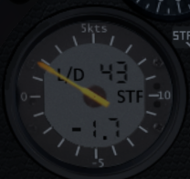
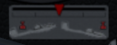
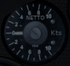
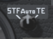
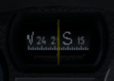
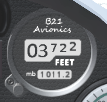
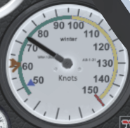

Shows the opening and closing of the airbrakes
Will be green when spoilers closed and locked (as above), or red (as left) when the spoilers aren't closed properly (which will kill your glide performance).
As a simple approximation, the ASG29 will manage up to 50:1 glide ratio with the spoilers closed, and more like 6:1 with gerar down, Landing flap and the spoilers fully open. A 'good' final approach to landing will have the spoilers 50% open, as this gives you the most flexibility in increasing or reducing the glide. It is generally accepted in gliding that the landing is a one-shot attempt.
Important: an analog axis on your joystick should be set to control the spoilers (in X-Plane called
Speedbrakes). Keen soaring pilots will use the throttle axis, with a backward pull opening the
brakes.
Also Important: when the spoilers are opened between 75% and 100%, the wheel brake is linearly operated.

Computer Vario. The needle shows compensated rate of climb, either Total Energy or Speed to Fly.
The switch on the panel (labelled 6) allows the pilot to choose whether they would like the instrument to stay in Total Energy mode, Speed to Fly mode, or automatically toggle between the two as appropriate. In general Total Energy mode, which simply tells you how much the glider is climbing or sinking, is most suitable for thermalling (the TE compensation smoothes out the short-term effects of pilot control inputs). The Speed to Fly mode is most suitable for cruising between thermals and especially the final glide - the indications of lift and sink are similar but actually telling you how much to slow down or speed up, i.e. if you are already flying at exactly the right speed the vario will read zero.
The Computer Vario will provide an audio indication of the lift and sink, i.e. a rising interrupted tone for lift and a continuous sinking tone for sink. For competitive flying this audio information is essential but for noobies and those recording video, it can be annoying and the volume can be turned down with the volume control knob (10).

Trim indicator. Shows the aircraft trim setting (controlled by the '[' and ']' keys, or you can assign a button or key to the b21/trim/trigger command). The trim provides a slight loading on the elevator which controls the glider speed at a neutral joystick position. Trim forward will result in a fast 'hands-off' gliding speed, while trim back will result in a slower speed, e.g. for more relaxed thermalling.

Netto Vario. The panel top-left smaller (57mm) variometer reads the Netto sink/climb rate. This is really simple in concept: the sink rate of the glider in still air at the current airspeed is subtracted from the total energy reading shown on the Winter Vario described above. If you watch the two varios carefully in flight you'll see they appear to move in tandem, with the Netto reading just offset upwards. This amount of offset of the Netto needle varies with the speed of the aircraft to match the way the 'still air' sink rate of the aircraft varies with airspeed.
The end result is the Netto Vario is showing you the sink rate of the air through which the aircraft is flying (as the natural sink of the glider has been deducted). In X-Plane you can witness this by choosing a flight in 'clear' weather and once you're off tow the needle will read pretty close to zero throughout your flight in spite of you flying at a variety of speeds.
Note the simulated instrument doesn't 'cheat' by reading vertical air movement from X-Plane - it does the same calculation as is built into the real instrument using airspeed and altimeter climb/descent rates so it is fairly accurate but will deviate in certain circumstances such as a low-G push-over just like the real instrument. At very fast or very slow airspeeds the aircraft 'polar' calculation calibrated into the instrument can't hope to be perfectly accurate so the netto reading will drift in these corners of the flight envelope, again like the real thing.
Maccready setting knob. The knob labelled "Mc" in the picture above is used to dial-in a Maccready Setting. This can be interpreted different ways but the simplest is as the expected strength of your next climb. I.e. the setting has the same units as your vario setting, e.g Knots, and the setting is displayed in the two digits at 3 o'clock in the picture above in which it is the "0.0" above the 'STF' graphic.
The computer vario will do many calculations based on how fast you are intending to fly, a simple example being your arrival height at a future waypoint will depend on your sink rate at your planned cruising speed with this being related by the glider polar. This may sound a circular explanation but the vario itself (in Speed-to-Fly mode) will be telling you how fast to fly and the vario assumes reasonably you will be mostly following that guidance. But it uses the pilot input for the expected strength of thermals to calibrate it's recommended speed-to-fly.
The net of all this is the Maccready Setting is the pilot's one communication with the computer vario which then adjusts everything else. The pilot learns pretty quickly that in still air a Maccready setting of, say, 3 knots will give a recommended speed of say 70 knots, or maybe a 4 knot Maccready will recommend 80 knots airspeed. A perfectly normal use of the Maccready setting is for the pilot, with years of experience of how fast they should fly in different weather conditions, to turn the Maccready UP when they want to fly a bit faster or DOWN when they feel they should be cautious. The computer vario will still do all the calculation trickery to continuously adjust the speed appropriately in any lift or sink. (Note the actual speeds in a heavily ballasted racing glider like the ASW27 will be much higher)
The Maccready Setting has a special use on final glide (see below). It is normal for the pilot to fly the course with an optimal cross-country Maccready Setting for the weather, say 3.5 knots, and at some point the arrival height for the finish will become positive (happy news). At this point the pilot is likely to set off for the finish but may still dolphin in thermals and gain a bit of energy on the way so the predicted arrival height continues to improve. At this point the pilot can turn UP the Maccready until that reduces the arrival height to a small margin above the airfield, and then follow the Speed-to-Fly much faster to the finish. The extra speed actually provides a built-in safety margin but only the pilot experience can assess the expected conditions on the way home to judge accurately the risk of landing out.
If you are currently clueless (welcome to gliding, by the way) just dial in a value of 4 knots, or 2 meters per second, and that will provide a reasonable medium. With experience you will learn to increase the figure when you're feeling confident and want to fly faster, or you're on the final glide and have lots of height in hand. On the other hand when you're struggling even to stay aloft, you'll dump all the ballast and reduce this to zero until things improve.

Computer Vario mode switch. Total Energy, Auto, or Speed-to-fly. See explanation above for the computer vario, or also see general information on Total Energy or Speed to Fly.

Navpanel. Shows navigation information, allowing the loading of standard X-Plane 'FMS' flightplans, providing directional pointers to the current and next waypoints, displaying windspeed and direction relative to current heading, and also the arrival height at the current and next waypoint predicted for the current ballast and maccready settings.
The Navpanel needs a flightplan loaded to provide most of its function, otherwise it shows basic recommended speed-to-fly information for the current Maccready setting, and the current smoothed glide ratio.
See the Navpanel usage guide.
Flaps and warnings indicator. This will indicate 1,2,3 (cruising flaps), 4/A (aerotow), 5T, 6T (thermalling), LAND (landing). If a cruising setting is selected when attempting to thermal, the low-speed handling and climb rate will be sub-optimal. If a thermalling setting is used during a high-speed cruise the glide ratio will be sub-optimal. Carrying water ballast requires particular attention to the flap settings. The indicator will also glow red and provide a warning if the main wheel is lowered while water ballast is carried, or if the spoilers are opened while the main wheel is retracted.

Compass. Shows magnetic bearing, adversely affected during banked turns.
Volume Control knob. The default instrument volume (including off) can be set in the USER_SETTINGS file.

Digital Altimeter. Units (feet, meters) can be set in the USER_SETTINGS file. The pressure setting (default QNH, 1013 mb) can be adjusted with the knob at bottom left of the altimeter to provide a QFE figure as required such that for local flying the home airfield can be dialled in as zero. For cross-country flying QNH is normally used.
Wheel up/down indicator. Wheel can be raised and lowered with the 'G' key, or assign a button or key to the standard X-Plane gear up/down commands.

Clock. Choice of displayed time (sim local, sim UTC, user real) can be set in the USER_SETTINGS file.

Airspeed indicator. Units (knots, kilometer per second) can be set in the USER_SETTINGS file.
Ballast indicator and control. This instrument shows the amount of water ballast carried, and the open/close buttons allow the water to be dumped. The aircraft will launch by default with 25% ballast (equal to 50Kg), but on the ground the ballast can be filled by clicking the tap/faucet icon on the left side of the indicator.